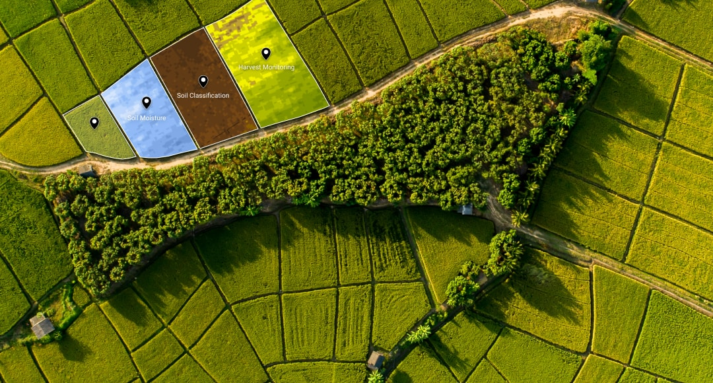

About ROOTSKART
Vision of the company
RootsKart specializes in tailoring AI-based solutions for farmers, leveraging geospatial technology to optimize farm management and maximize productivity. Additionally, it offers e-commerce services, creating a comprehensive platform that supports farmers in enhancing their agricultural practices and market reach.

AI based solution
RootsKart is dedicated to empowering farmers with AI-based solutions customized to their unique agricultural needs. Our cutting-edge technology aids in effectively managing and mitigating pesticide usage, ultimately promoting sustainable and eco-friendly farming practices. By leveraging AI algorithms and advanced data analytics, we assist farmers in optimizing their yields, enhancing crop quality, and ensuring a prosperous harvest. Our mission is to revolutionize the agricultural landscape by providing farmers with the tools and insights they need to thrive in an ever-evolving industry.

GIS services
In addition to tailored AI solutions, RootsKart extends its support to farmers through comprehensive satellite imagery services. Leveraging advanced geospatial technology, we provide farmers with high-resolution satellite images of their farm lands. These images offer invaluable insights into soil health, crop growth, and overall land conditions. By harnessing the power of satellite imagery, farmers can make data-driven decisions regarding irrigation, fertilization, and pest control. This information allows them to allocate resources efficiently, optimize their farming processes, and make informed choices that enhance yields while minimizing environmental impact. Through this integrated approach of AI-based solutions and satellite imagery services, RootsKart is committed to modernizing agriculture and empowering farmers with the tools needed to cultivate healthier, sustainable crops and contribute to a greener future.
